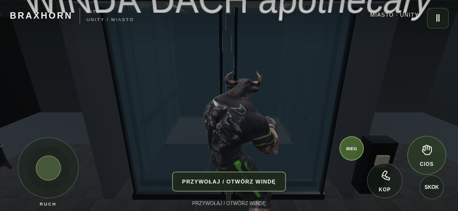
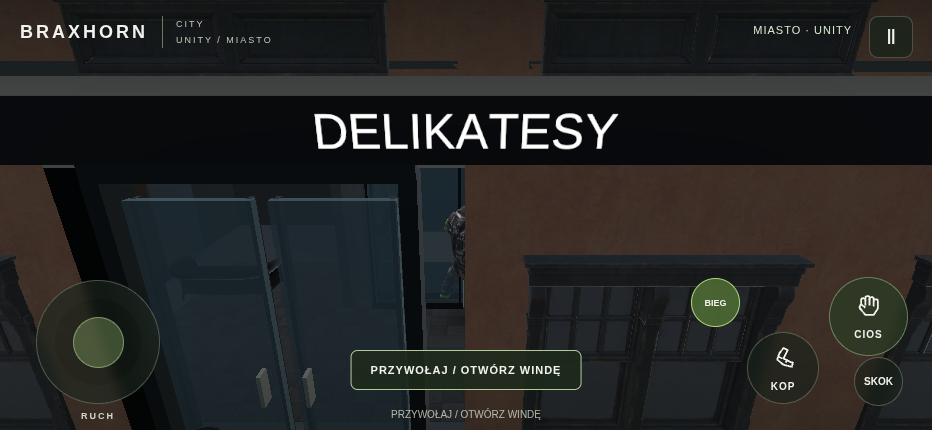
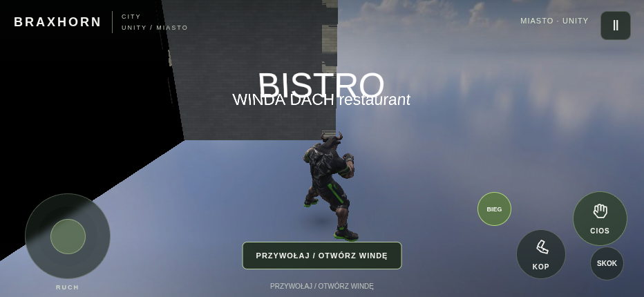
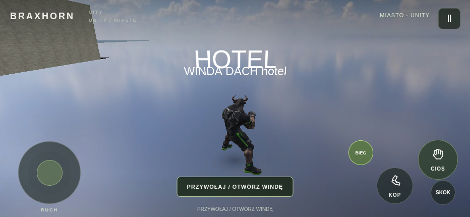
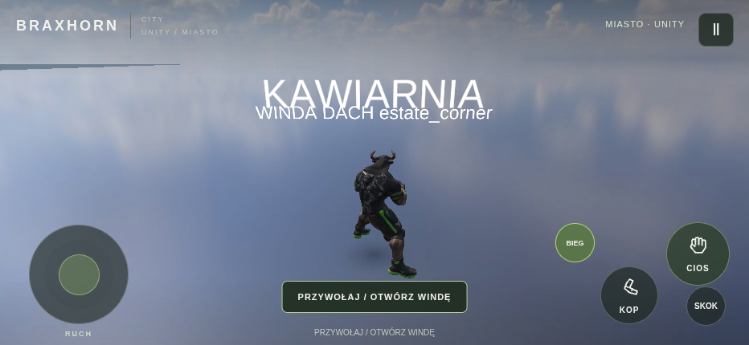
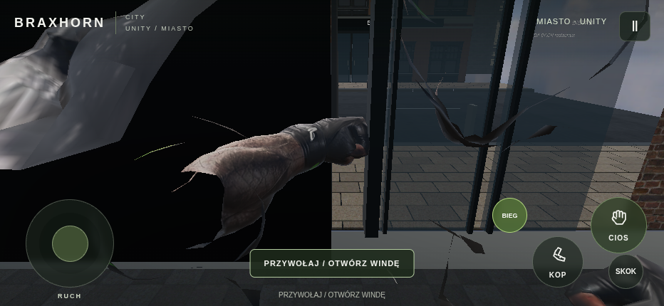
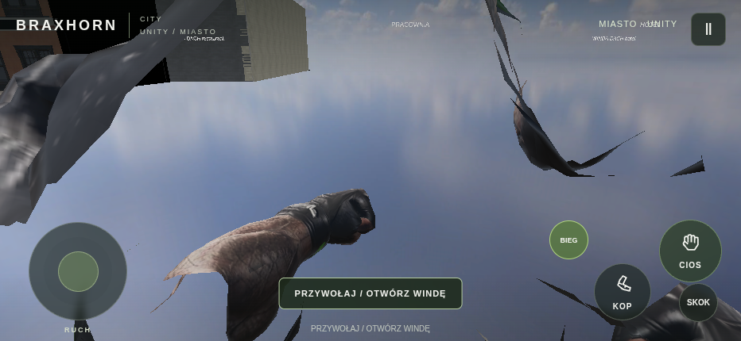
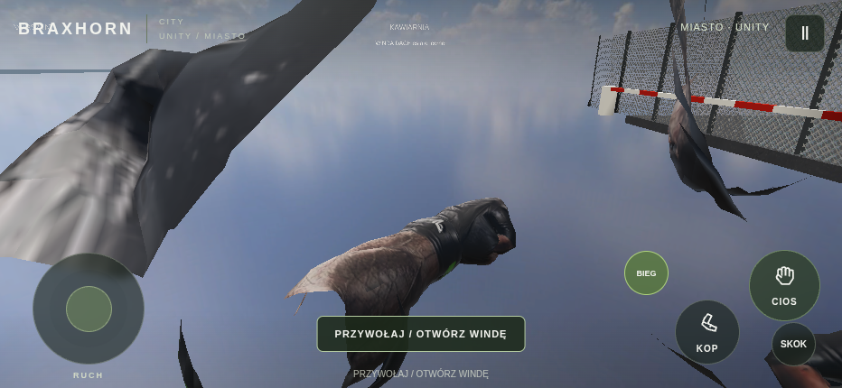

BRAXHORN CITY — osiem wieżowców, przegląd Unity
Prawdziwe nagranie Unity 6 z testu WebGL i osiem rzeczywistych ujęć lobby biurowych. To przegląd prac, nie potwierdzenie zakończenia ani odbiór na fizycznym telefonie. Oryginalny Brax i źródłowe materiały projektu.
TEST · źródło 095c75498c12 · produkcja niezmieniona · wejścia i pełne piętra wymagają dalszej kontroli






